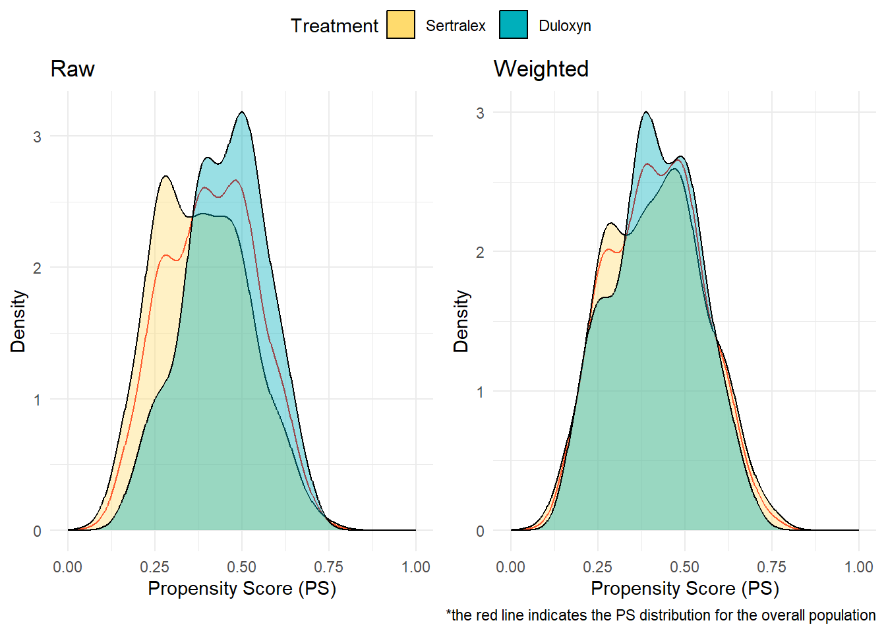
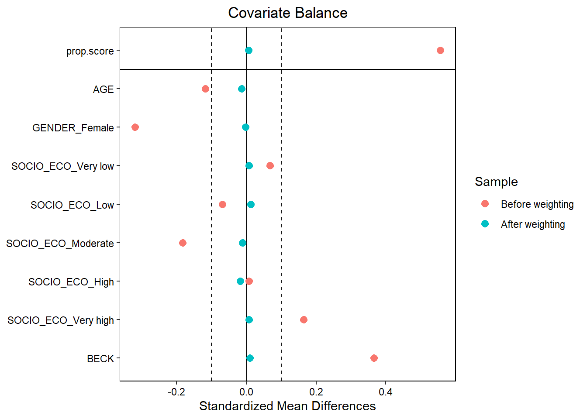
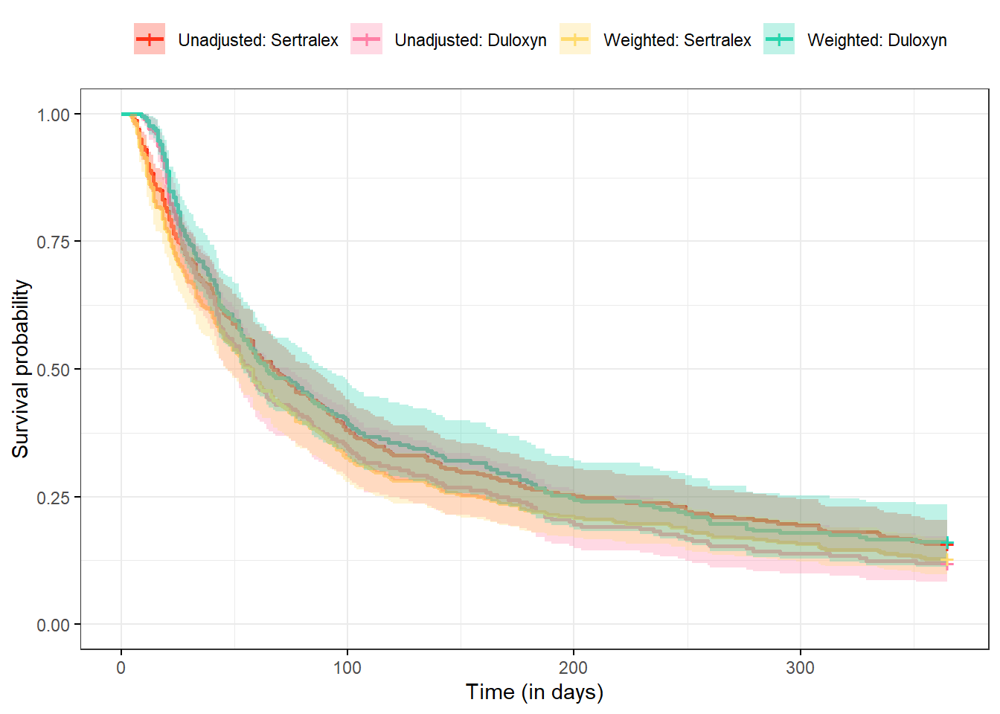

Chapter 5 Propensity score methods
5.1 Background
The Propensity Score (PS) is used to replicate the randomization process, aiming to balance individual characteristics at the beginning of a study. Statistically, the PS is defined as the conditional probability of receiving the exposure of interest based on observed baseline characteristics. It is commonly estimated using multivariable logistic regression, where the exposure serves as the dependent variable and the baseline characteristics act as independent variables.
Once the PS is calculated, it can be utilized in various approaches, including matching, stratification, Inverse Probability of Treatment Weighting (IPTW), and covariate adjustment.
The ITT analysis described in the 4.2 will be applied to illustrate the application of IPTW.
5.2 Identify confounders
Observed baseline characteristics incorporated in the logistic regression must be defined as confounders, which are variables that affect both treatment assignment and the outcome without being part of the causal pathway between them. Other variable types, such as mediators or colliders, may also be present; however, adjusting for these can introduce bias.
We recommend using Directed Acyclic Graphs (DAGs) to visually represent causal relationships, and communicate with clinical experts. DAGs can be created using the DAGitty website or dagitty R package.
In our example, we identified age at diagnosis, gender, Beck score and socioeconomic status as potential confounders of the association between treatment exposure and relapse.
5.3 IPTW implementation
This code implements the IPTW approach using the Average Treatment Effect (ATE) estimand:
5.4 Balance Diagnostics
To evaluate balance after weighting, visual assessment is usually done. First, PS distributions are represented to assess the degree of overlap between the Setralex and Duloxyn individuals The objective is to have a large enough common support to ensure that it exists a population in-between these two.
#Display PS
plot1<-ggplot2::ggplot(data, mapping = aes(x = ps))+
ggplot2::geom_density(colour="red")+
ggplot2::geom_density(mapping=aes(group = TREAT0, fill = TREAT0),alpha=0.4)+
ggtitle("Unweighted")+
scale_fill_manual(name="Treatment",labels=c("Sertralex","Duloxyn"),values=c("#FFDB6D","#00AFBB"))+
xlab("Propensity Score (PS)")+
ylab("Density")+
xlim(0,1)+
labs(caption="")+
theme_minimal()
#After weighting
plot2<-ggplot2::ggplot(data, mapping = aes(x = ps, weight = weights))+
ggplot2::geom_density(colour="red")+
ggplot2::geom_density(mapping=aes(group = TREAT0, fill = TREAT0),alpha=0.4)+
ggtitle("Weighted")+
scale_fill_manual(name="Treatment",labels=c("Sertralex","Duloxyn"),values=c("#FFDB6D","#00AFBB"))+
xlab("Propensity Score (PS)")+
ylab("Density")+
xlim(0,1)+
labs(caption="*the red line indicates the PS distribution for the overall population")+
theme_minimal()
ggarrange(plot1,plot2,common.legend = T)
We observed that after weighting the two distributions curves overlaid and therefore this indicates that the dataset is correctly balance in average. Then, we usually assess balance for each variable.
love.plot(W,
binary = "std",
thresholds = c(m = .1),
sample.names = c("Before weighting", "After weighting"))
We observe that after weighting the BECK score remains above the recommended threeshold. That is why, we suggest adjusting on it (i.e. doubly robust approach) when the outcome is investigated.
A summary descriptive table before and after weighting is represented below stratifed on treatment status.
#Before weighting
t1 <- data %>%
select(AGE, GENDER, SOCIO_ECO, BECK0, TREAT0) %>%
tbl_summary(by = TREAT0,
statistic = list(all_continuous() ~ "{mean} ({sd})"),
label = list(AGE ~ "Age (at diagnosis)",
GENDER ~ "Gender",
SOCIO_ECO ~ "Socioeconomic status (1-5)",
BECK0 ~ "Beck score (0-63)")) %>%
add_difference(test = everything() ~ "smd") %>%
add_overall() %>%
modify_header(label ~ "**Variable**",
estimate ~ "**SMD**",
stat_0 ~ "**Total**",
stat_1 ~ "**Sertralex**",
stat_2 ~ "**Duloxyn**")
data_selected <- data %>%
select(AGE, GENDER, SOCIO_ECO, BECK0, TREAT0)
#After weighting
data_svy <- svydesign(ids = ~1, data = data_selected, weights = ~W$weights)
t2 <- data_svy %>%
tbl_svysummary(by = TREAT0,
statistic = list(all_continuous() ~ "{mean} ({sd})"),
label = list(AGE ~ "Age (at diagnosis)",
GENDER ~ "Gender",
SOCIO_ECO ~ "Socioeconomic status (1-5)",
BECK0 ~ "Beck score (0-63)")) %>%
add_difference(test = everything() ~ "smd") %>%
add_overall() %>%
modify_header(label ~ "**Variable**",
estimate ~ "**SMD**",
stat_0 ~ "**Total**",
stat_1 ~ "**Sertralex**",
stat_2 ~ "**Duloxyn**")
for (int_col in c("modify_stat_N", "modify_stat_n")) {
t1$table_styling$header[[int_col]] <-
t1$table_styling$header[[int_col]] |> as.numeric()
}
tbl_merge(tbls = list(t1, t2),
tab_spanner = c(
paste0("**Unweighted (N=",nrow(data),")**"),
paste0("**Weighted (ESS=",round(ESS(W$weights),0),")**")
)
)%>%
modify_table_body(~ .x %>% select(-conf.low_1, -conf.low_2))| Variable |
Unweighted (N=600)
|
Weighted (ESS=324)
|
||||||
|---|---|---|---|---|---|---|---|---|
| Total1 | Sertralex1 | Duloxyn1 | SMD2 | Total1 | Sertralex1 | Duloxyn1 | SMD2 | |
| Age (at diagnosis) | 31.9 (6.1) | 32.3 (5.8) | 31.5 (6.3) | 0.13 | 31.5 (6.2) | 31.4 (6.2) | 31.6 (6.1) | -0.02 |
| Gender | 0.32 | 0.01 | ||||||
| 0 | 303 (51%) | 131 (43%) | 172 (59%) | 577 (49%) | 287 (49%) | 290 (49%) | ||
| 1 | 297 (50%) | 175 (57%) | 122 (41%) | 596 (51%) | 298 (51%) | 297 (51%) | ||
| Socioeconomic status (1-5) | 0.20 | 0.10 | ||||||
| 1 | 111 (19%) | 52 (17%) | 59 (20%) | 211 (18%) | 112 (19%) | 99 (17%) | ||
| 2 | 108 (18%) | 60 (20%) | 48 (16%) | 204 (17%) | 94 (16%) | 109 (19%) | ||
| 3 | 136 (23%) | 66 (22%) | 70 (24%) | 277 (24%) | 146 (25%) | 131 (22%) | ||
| 4 | 126 (21%) | 58 (19%) | 68 (23%) | 265 (23%) | 127 (22%) | 138 (24%) | ||
| 5 | 119 (20%) | 70 (23%) | 49 (17%) | 216 (18%) | 107 (18%) | 110 (19%) | ||
| Beck score (0-63) | 31 (9) | 25 (8) | 36 (8) | -1.4 | 31 (9) | 30 (9) | 31 (9) | -0.16 |
| 1 Mean (SD); n (%) | ||||||||
| 2 Standardized Mean Difference | ||||||||
5.5 Outcome analysis
We compare below the unweighted and weighted Kaplan-Meir curves stratified on treatment group.
library(survminer)
unadjusted<- survfit(Surv(TIME_TO_EVENT, EVENT)~TREAT0, data = data)
adjusted<- survfit(Surv(TIME_TO_EVENT, EVENT)~TREAT0, data = data, weights = weights)
fit<-list(unadjusted,adjusted)
ggsurvplot_combine(fit,
data = data,
legend.title = "",
legend.labs = c("Unweighted: Sertralex",
"Unweighted: Duloxyn",
"Weighted: Sertralex",
"Weighted: Duloxyn"),
palette = c("#ff331a","#ff80a6","#FFDB6D","#27d4ad"),
conf.int = TRUE,
xlab = "Time (in weeks)",
ggtheme = theme_bw())
Then, we implement Cox models
unweighted <- coxph(Surv(TIME_TO_EVENT, EVENT)~TREAT0, data = data) %>%
tbl_regression(
exponentiate = TRUE,
label = list(TREAT0 ~ "Treatment (unweighted)"))
weighted <- coxph(Surv(TIME_TO_EVENT, EVENT)~TREAT0+BECK0, weights = weights, data = data) %>%
tbl_regression(
exponentiate = TRUE,
label = list(TREAT0 ~ "Treatment (weighted)",
BECK0 ~ "Beck (to adjust remaining imbalance)"))
tbl_stack(list(unweighted, weighted))| Characteristic | HR1 | 95% CI1 | p-value |
|---|---|---|---|
| Treatment (unweighted) | |||
| 0 | — | — | |
| 1 | 2.11 | 1.40, 3.18 | <0.001 |
| Treatment (weighted) | |||
| 0 | — | — | |
| 1 | 0.70 | 0.38, 1.29 | 0.3 |
| Beck (to adjust remaining imbalance) | 1.11 | 1.07, 1.14 | <0.001 |
| 1 HR = Hazard Ratio, CI = Confidence Interval | |||